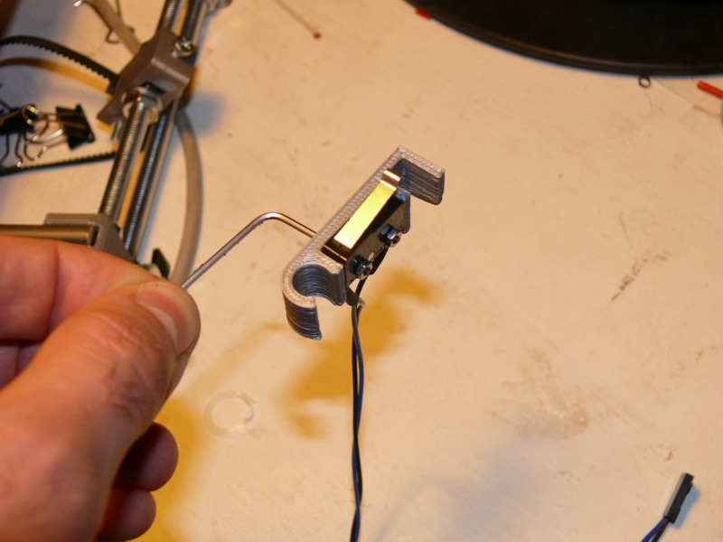

Questo documento vi guiderà passo passo nell’assemblaggio del kit i3 preparato dal laboratorio Unterwelt. Abbiamo fatto di tutto per semplificare i passaggi al massimo. Tutto quello che imparerete in queste fasi vi tornerà utile per capire come funziona la vostra macchina e per risolvere eventuali problemi.
Il kit contiene alcuni accessori, ma accertatevi di avere anche i seguenti strumenti:
È importante che eseguiate l’assemblaggio su una superficie perfettamente piana.
Mettetevi comodi e cominciamo.
Prendete:
Tagliate il tubo fornito in due pezzi da circa 3cm l’uno.
Accoppiate ciascun motore con una barra filettata come mostrato nella foto seguente.
Ora prendete i due supporti in plastica mostrati in foto ed accertatevi che vi si possa infilare una barra liscia. In caso contrario, limate il foro quanto basta.
Ora prendete:
Applicate i supporti in plastica al telaio come mostrato in foto.
Nota: i supporti vanno applicati sul lato del telaio che mostra la scritta PRUSA.
Ora prendete:
Installate nei supporti i motori preparati prima.
Nota: rivolgere i cavi dei motori verso il telaio.
Prendete:
Applicate i cuscinetti al supporto come mostrato in foto:
Prendete:
Montate il pezzo come segue:
Prendete:
Preparate ciascuna barra come mostrato in foto:
Ora prendete una barra liscia da 350mm e usatela per trovare la distanza tra i terminali in plastica come mostrato nella foto seguente. Serrate i dadi dei due terminali in plastica secondo la misura trovata.
Ora prendete:
Preparate la barra come mostrato in foto:
Ora prendete:
Preparate la barra come mostrato in foto:
Ora prendete:
Preparate la barra come mostrato in foto:
Ora prendete:
Ora assemblate il tutto come mostrato nella foto che segue. La distanza tra le barre (esterno-esterno) deve essere di circa 17.7cm. Aggiungete ad ogni estremità una rondella e un dado, e poi serrateli da entrambi i lati dei terminali in plastica.
Nota: il supporto per il motore deve essere rivolto verso l’interno.
Posizionate l’asse Y all’interno del telaio e serrate le rondelle grandi. La distanza tra il telaio e i terminali in plastica frontali deve essere di 19cm.
Nota: attenzione al verso. Il supporto del motore Y deve trovarsi sul retro e il tendicinghia deve trovarsi sul lato del telaio con la scritta PRUSA.
Ora prendete:
Infilate le barre lisce nei cuscinetti lineari ed applicatele sui terminali in plastica come mostrato in foto:


Ora prendete:
Installate la puleggia sull’asse del motore come mostrato in foto:
Ora prendete:
Installate il motore appena preparato sul supporto in plastica come mostrato in foto.
Nota: rivolgere i cavi del motore verso la barra filettata.

Ora prendete:
Inserite il dado nella sua sede e avvitate la vite M4 quanto basta per trattenerla (la stringeremo dopo).
Ora prendete:
Installate i cuscinetti nel tendicinghia come mostrato in foto:
Posizionare il motore e il tendicinghia in modo che si formi una linea retta passante per il supporto della cinghia sotto il piano di stampa. Una volta trovata la posizione, serrare i dadi di entrambi:

Ora ribaltate la stampante come mostrato in foto:
Ora prendete:
Installate la cinghia come mostrato in foto, partendo dal supporto sotto il piano di stampa, poi passando intorno alla puleggia, poi passando intorno ai cuscinetti del tendicinghia e infine tornando al punto di partenza:

Riposizionate normalmente la stampante e tendete la cinghia come mostrato in foto.
Nota: la vite non deve necessariamente arrivare a fondo corsa, però la cinghia deve essere ben tesa.

Prendete:
Installate il motore sul supporto come da foto:
Ora prendete anche:
Inserite le viti M5 negli alloggiamenti come mostrato in foto (questa operazione potrebbe essere già stata fatta da noi prima di mandarvi il kit):
Recidete l’eventuale collegamento che chiude l’alloggio dei cuscinetti sui due elementi in plastica (in modo che si possano allargare quanto basta per inserire i cuscinetti):
Inserite due cuscinetti in ciascun elemento in plastica (un cuscinetto per lato):
Ora prendete:
Installate il cuscinetto come mostrato in foto, con due rondelle da ogni lato:
Ora prendete:
Preparate le barre come segue:
Inserite le barre nei due terminali in plastica:
Avvitate le barre filettate M5 dei motori Z dentro i supporti dell’asse X appena preparato:
Fate scendere il carrello (almeno 6-7cm) ruotando con un po’ di pazienza le barre filettate M5. È bene ruotarle in contemporanea per mantenere l’asse sempre orizzontale:
Ora prendete:
Inserite le barre lisce nei cuscinetti e inseritele nelle loro sedi sui motori Z:
Recidete l’eventuale filetto di collegamento nei terminali in plastica:
Installate i terminali superiori come da foto, dopo averci inserito le barre lisce. Usate le due viti M3 per fissarli al telaio.
Ora prendete:
Preparate il carrello come da foto:
Applicate il carrello ai cuscinetti già presenti sulle barre lisce dell’asse X:
Ora prendete la cinghia rimanente e installatela come da foto, partendo dal carrello, proseguendo intorno ai cuscinetti e poi intorno alla puleggia del motore, e infine tornando al punto di partenza:
Prendete:
Preparate ciascun cavo girandolo su se stesso a formare una treccia come mostrato in foto:
Cominciamo dal motore X. Formate una treccia anche con il suo cavo:
Tagliate quattro spezzoni di guaina termorestringente, da circa 15mm l’uno:
Unite il cavo del motore con uno dei cavi preparati in precedenza. Tagliateli in modo che la lunghezza totale dal motore al connettore sia di 35cm.
Nota: ricordatevi di infilare le guaine termorestringenti prima di giuntare i cavi!
Ricoprite le giunzioni con le guaine e scaldatele con l’accendino in modo da farle aderire:

Ripetete la stessa operazione per il motore Y. La lunghezza totale del cavo dal motore al connettore deve essere di 62cm. Fissate quindi il cavo con due fascette come indicato:
Ripetete la stessa operazione per i due motori Z. La lunghezza totale dei cavi dal motore al connettore deve essere come segue:
Nella foto la stampante è mostrata da dietro (quindi dal lato opposto alla scritta PRUSA):
Fissate i tre cavi al telaio con quattro fascette:
Infine cablate il motore dell’estrusore. La lunghezza totale del cavo dal motore al connettore deve essere di 42cm:
Prendete:
Inserite il cuscinetto nella sua sede come mostrato in foto (se non entra facilmente si consiglia di limare i bordi del pezzo in plastica):
Ora prendete:
Inserite la barretta nel cuscinetto e applicate un po’ di forza per farla entrare a scatto nel componente in plastica:


Inserite il dado M3 nell’alloggiamento interno:

Installate il componente sul corpo principale dell’estrusore inserendo 5 rondelle come da foto:
Nota: la foto mostra solo tre rondelle, ma ce ne vanno cinque.
Ora prendete:
Inserite il dado nella sede dell’ingranaggio:
Inserite l’ingranaggio sull’albero del motore.
Nota: se non entra bene, non forzatelo. Limate il foro quanto basta. Nota: lasciare un piccolo distacco tra ingranaggio e motore per evitare attrito.
Serrate l’ingranaggio all’albero del motore usando il grano M3:
Nota: non stringete eccessivamente altrimenti si potrebbe rompere l’ingranaggio in plastica.
Ora prendete:
Avvitate il dado autobloccante all’estremità della vite trascinafilo:
Nota: attenzione al verso. La vite non è simmetrica.
Inserite la vite nell’ingranaggio e poi aggiungere tre rondelle M8:
Inserite la vite nel corpo dell’estrusore come da foto seguente. La dentatura della vite deve essere perfettamente allineata con il foro attraverso cui passerà il filamento: per fare ciò si consiglia di bloccare l’estremità destra della vite con una pinza (ci sono delle apposite parti piatte) e girare l’ingranaggio con la mano sinistra in modo da regolare il dado autobloccante:
Ora prendete:
Completate l’installazione della vite trascinafilo come mostrato in foto, serrando il dado:
Ora prendete:
Installate il motore come mostrato in foto.
Nota: rivolgete i cavi del motore come mostrato in foto.
Ora prendete:
Preparate le viti come mostrato in foto:
Inserite i dadi nei loro alloggiamenti:
Installate le viti (non è necessario avvitarle fino in fondo):
Ora prendete:
Inserite l’estrusore nel suo alloggiamento. Consigliamo di rivolgere i cavi verso il lato sinistro della foto:
Serrate l’estrusore con le due viti:
Ora prendete:
Inserite i dadi nelle apposite sedi sul retro del carrello:
Inserite le viti nei fori passanti alla base dell’estrusore (se la testa delle viti non dovesse entrare facilmente, allargate l’ingresso dei fori usando ad esempio un cacciavite a stella largo):
Installate l’estrusore sul carrello:
Raccogliete i cavi con una fascetta come mostrato in foto:
Prendete:
Inserite le viti nei due angoli superiori del piano e serratele con 3 dadi:
Per i due angoli inferiori usate solo due dadi (il primo serratelo bene contro il piano, l’altro lasciatelo libero):
Installate il piano e serratelo con un ulteriore dado per ciascun angolo. Quando regoleremo l’orizzontalità del piano useremo gli angoli posteriori (quelli con tre dadi) come cerniera, e agiremo sugli angoli frontali per regolare l’inclinazione).
Infine prendete:
Posizionate il piano:
Fissatelo con le clip:
Gli endstop sono i sensori di fine corsa. Servono alla macchina per trovare lo zero su ciascun asse di movimento.
Prendete:
Applicate l’endstop al supporto come mostrato in foto (nota: rispettare l’orientamento della leva metallica e delle viti):
Posizionate l’endstop sulla macchina:
Ripetete l’operazione per l’endstop da applicare all’asse Y:

Preparate infine l’endstop per l’asse Z (il supporto è leggermente diverso da quello usato per gli assi X e Y) e installatelo sulla macchina come mostrato in foto.
Nota: posizionare l’endstop Z nella posizione più alta. In fase di calibrazione lo abbasseremo quanto necessario.

Ora prendete:
Applicate la scheda RAMPS su Arduino:
Inserite le viti e applicate i distanziali:
Montate la scheda sul telaio:
Collegate i cavi di potenza del piano riscaldato al morsetto D8 sulla scheda elettronica (la polarità è indifferente):
Collegate i cavi di potenza dell’estrusore al morsetto D10 sulla scheda elettronica (la polarità è indifferente):
Collegate:
Nota: il connettore degli endstop va inserito in modo che i due contatti collegati effettivamente all’endstop vadano ai due pin a sinistra. In altre parole, il pin a destra sulla scheda resterà non collegato.
Prendete il cavo di alimentazione e rimuovete il plug:
Collegate il cavo all’alimentatore:
Prendete il cavo bipolare fornito nel kit e collegatelo come mostrato nella foto che segue:
Nota: se il cavo fornito è di colore rosso e nero, collegare il rosso a “+V” e il nero a “COM”.
Nota: l’ordine dei contatti nell’alimentatore fornito potrebbe differire da quello mostrato in foto.

Collegate la linea alle due coppie di morsetti presenti sulla scheda in basso a destra, rispettando attentamente la polarità (v. immagine precedente):
Potete a vostra scelta biforcare ad Y la coppia di cavi provenienti dall’alimentatore oppure collegarla ad una coppia di morsetti ed usare due spezzoni di cavo come ponticelli per collegare l’altra coppia in parallelo.
Scaricate il software di Arduino e installate il driver FTDI in esso contenuto.
Scaricate anche Pronterface e Slic3r.
Collegate il cavo USB alla scheda e al computer. Lasciate l’alimentatore scollegato.
A questo punto bisogna caricare il firmware sulla scheda Arduino. Nota: per i kit in consegna a partire da marzo 2014 il firmware è precaricato, quindi questo passaggio può essere saltato. Scaricate il firmware cliccando qui e aprite il file Marlin.pde con la IDE di Arduino. Selezionate la porta seriale corrispondente alla vostra scheda (se non è immediatamente chiaro provatele tranquillamente tutte) e selezionate “Arduino Mega 2560” come scheda. Cliccate quindi su “Upload”.
Una volta installato il firmware aprite Pronterface. Selezionate in alto una velocità di connessione di 250000 e la porta seriale corrispondente alla vostra stampante, poi cliccate “Connetti”.
Nota: Non potendo indicarvi quale sarà il nome della porta sul vostro computer, potete tranquillamente provarle tutte finché non riuscite a connettervi.
Cliccate sul bottone “Check temp”. Pronterface visualizzerà la temperatura rilevata dai due termistori (quello sull’estrusore e quello sul piano riscaldato): corrisponderà alla vostra temperatura ambiente. Se le due letture non dovessero apparire, controllate i cablaggi.
A questo punto collegate l’alimentatore della stampante.
Ora premete il bottone che rappresenta una casa con scritto “X”. Questo eseguirà l’homing dell’asse X, ossia porterà il carrello tutto a sinistra finché non toccherà lo switch.
Fate altrettanto con l’asse Y: il piano verrà verso di voi.
A questo punto potete provate a muovere gli assi X e Y usando i comandi manuali di Pronterface. Non toccate l’asse Z prima di avere eseguito la calibrazione descritta nel prossimo paragrafo.
Se i motori si muovono a scatti, dovete regolare la corrente sui singoli driver (noti anche come Pololu). Prendete un piccolo cacciavite a taglio, meglio se in plastica, e regolate i piccoli potenziometri presenti sul driver corrispondente al motore che state regolando. Girando in senso orario aumenterete la corrente, in senso antiorario la diminuirete.
Ora dobbiamo regolare l’altezza dello switch dell’asse Z in modo che l’asse si arresti esattamente quando tra la punta dell’estrusore e il piano ci sono 0mm. Bisogna però stare attenti a non andare oltre perché si potrebbe rompere il vetro.
A questo scopo prendete un foglio di carta e piegatelo due volte: regoleremo il nostro switch in modo da arrestare la discesa quando solo quel foglio di carta può passare tra estrusore e piano.
Inizialmente portate lo switch nella posizione più alta possibile. Poi premete il tasto di homing di Z in Pronterface (quello con l’icona di una casa e la Z): il carrello comincerà a scendere fino ad arrestarsi.
Ora, gradualmente abbassate l’endstop e riprovate a fare l’homing, verificando la distanza dal piano con il foglio di carta. Questa fase è delicata ed importante: anche se non è molto divertente fatela con attenzione e pazienza.
Vi sarete accorti a questo punto che è molto importante che il piano di stampa sia perfettamente orizzontale, altrimenti avrete altezze diverse nei suoi diversi punti. Dovrete quindi regolarlo in questo modo:
per regolarne la pendenza lungo l’asse Y, regolate i dadi che lo fermano al suo telaio (ricordate che davanti ne abbiamo messi solo due mentre dietro tre? regolate quelli frontali facendo cerniera su quelli posteriori)
per regolare l’orizzontalità lungo l’asse X, invece, agirete sul carrello in modo da adeguarlo al piano: girate una delle due barre filettate di Z per inclinarlo maggioremente verso sinistra o verso destra (se non riuscite a girarle, cliccate su “Motors Off” in Pronterface)
Ritenetevi soddisfatti della vostra calibrazione solo se:
Allentate le due viti ed inserite il filamento fino in fondo, poi stringetele di nuovo fino a comprimere la molla:
Ora da Pronterface impostate una temperatura di 190°C per l’estrusore (heater) ed una di 70°C per il piano riscaldato.
Nota: 190°C è una buona temperatura di partenza per il PLA, mentre l’ABS richiede almeno 230°C. Nei nostri kit mettiamo sempre alcuni metri di PLA.
Abilitando il comando “Watch” Pronterface verificherà costantemente la temperatura della stampante. Quando il riscaldamento sarà completo, potrete cliccare su “Extrude” per verificare che… beh, potete immaginare cosa succederà.
Ricordatevi di spegnere le temperature ad operazione terminata.
Adesso è arrivato il momento di scaricare un oggetto di prova da Thingiverse, come questo cubetto che è ottimo per iniziare.
Aprite Slic3r e configurate le seguenti impostazioni:
Se avete un calibro, misurate esattamente il diametro del vostro filamento (fatelo in più punti) ed inserite il valore nel campo ‘Filament Settings’ -> ‘Filament’ -> ‘Diameter’, altrimenti lasciate 3mm.
Ora cliccate su “Plater” e caricate il file STL del vostro cubetto usando il tasto “Add…”. Cliccate poi su “Export G-code…” per salvare il file G-code contenente il vostro cubetto trasformato in istruzioni per la stampante.
Tornate su Pronterface, aprite il file G-code usando il tasto “Load file” e poi cliccate su “Print”.
Buon divertimento!